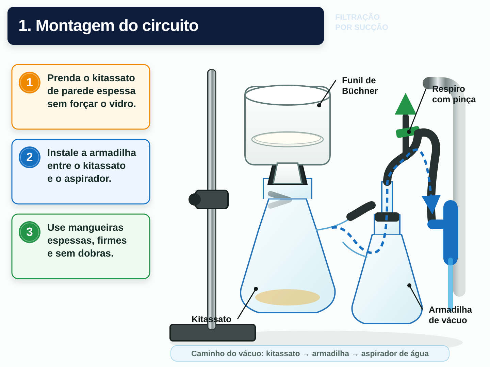

Reter o sólido
A sucção acelera a separação quando o objetivo é recuperar a fase sólida, especialmente após cristalização.
Explorar

Preparando a bancada virtual…
Arraste para girar · use dois dedos ou a roda para aproximar
Toque numa peça para conhecê-la
Fundamento experimental
A pequena porção de solvente frio compatível atravessa o papel sob sucção e o mantém aderido à placa perfurada. Essa vedação reduz caminhos pelas bordas, onde cristais poderiam passar diretamente ao filtrado.
A sucção acelera a separação quando o objetivo é recuperar a fase sólida, especialmente após cristalização.
Em cristalização, utiliza-se normalmente pequena quantidade do mesmo solvente frio. Água não é uma escolha universal.
A armadilha protege o circuito, e o respiro deve ser aberto antes de desligar o aspirador.
Referência científica principal: Lisa Nichols, Suction Filtration, Chemistry LibreTexts.
Consultar fonte original ↗